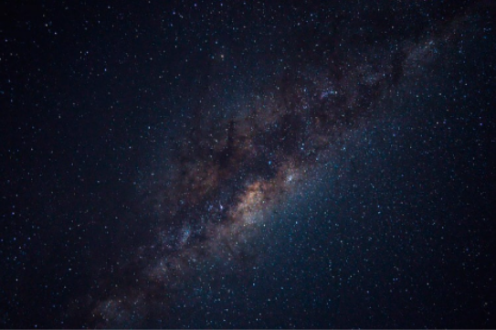

El Sistema Solar es un conjunto formado por el sol y ocho planetas que giran a su alrededor. De los ocho planetas, uno es donde vivimos: la Tierra
Además de estos elementos hay otros cuerpos celestes que también orbitan alrededor de la gran estrella solar, como los satélites de cada planeta, los cometas o los asteroides.
En el universo hay millones de galaxias. Una de ellas es la que conocemos como Vía Láctea
La Vía Lactea, formada por estrellas, polvo y gas, tiene forma de espiral. Podría decirse que su aspecto es algo así como un remolino con varios brazos; pues bien, en uno de ellos, el llamado Brazo de Orión, se encuentra el Sistema Solar.

Lo cierto es que hace tanto tiempo que es muy dificil saber este dato con seguridad, pero se cree que fue hace...¡4,5 MIL MILLONES DE AÑOS! Si lo piensas bien te darás cuenta de que estamos hablando de un espacio temporal impactante y que nos resulta dificil de imaginar
Este es otro tema que todavía no está claro, pero según las últimas investigaciones parece ser que la fortisima explosión de una estrella provocó que una gran nube de gas y polvo se contrajera y empezara a girar a gran velocidad. Por lo visto, la mayor parte de esta materia se concentró en el centro y se fue calentando cada vez más y más, hasta formar una gran estrella: el Sol
después, alrededor del Sol, el resto del polvo y gas fue chocado y juntandose hasta formar los diferentes planteas.
Los ocho planetas del Sistema Solar
Los planetas del Sistema Solar son ocho cuerpos celestes sólidos de forma casi circular. A diferencia del Sol, no tienen luz propia.
Los planetas están simpre moviéndose y girando alrededor del Sol. A este movimiento se le llama movimiento de traslación, y cada uno lo hace en un tiempo diferente. El tiempo que nuestro plantea Tierra tarda en dar la vuelta completa al Sol es lo que llamamos año, es decri, 365 días. Sí, eso es: cada año que vivimos es una vuelta que da la Tierra alrededor del Sol.
Además de esta órbita, la Tierra gira sobre sí misma y tarda exactamente 24 horas. Para nosotros es un día completo. Esto se conoce como movimiento de rotación.
Por tanto, mientras la Tierra da una vuelta completa al Sol (un año) gira sobre si misma 365 veces (365 días)
Por orden, del más cercano al más lejano del Sol, los planetas son: Mercurio, Venus, Tierra, Marte, Júpiter, Saturno, Urano y Neptuno
Otros elementos del Sistema Solar
Mercurio
Venus
Tierra
Marte